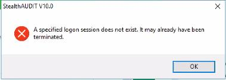

Summary: User is unable to create scheduled tasks in the StealthAUDIT Console. Modifying a local security policy on the StealthAUDIT Console application server will resolve.
Issue: Local security policy prevents the creation of scheduled tasks not running as Local System.
Instructions: If you receive an error about a "specified logon session doesn't exist" when attempting to create scheduled tasks within StealthAUDIT, there's likely a local security policy enabled that needs to be disabled on the application server.

You can verify this by attempting to create a scheduled task from the native Windows
Task Scheduler and you should receive the same error response.
If the Network access: Do not allow storage of passwords and credentials for
network
authentication policy is enabled and applied, Credential Manager cannot store the
credentials locally, thus this error message appears.
Simply disable
Network access: Do not allow storage of passwords and credentials for network
authentication under
SECPOL.MSC | Security Settings | Local Policies | Security Options.
You should now be able to create scheduled tasks within the StealthAUDIT console.
Product:
StealthAUDIT
Module: Core (Scheduled tasks settings within the StealthAUDIT console.)
Versions: N/A
Module: Core (Scheduled tasks settings within the StealthAUDIT console.)
Versions: N/A